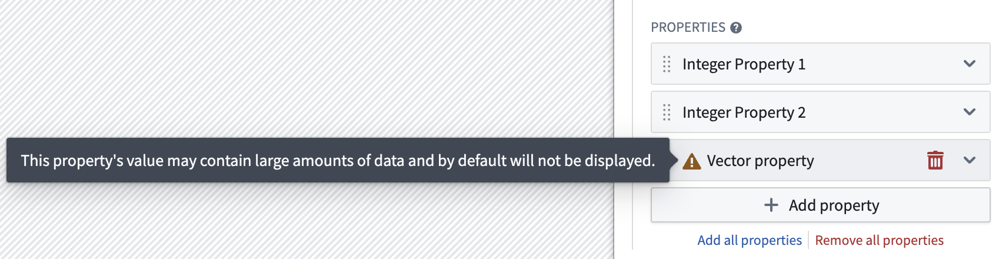
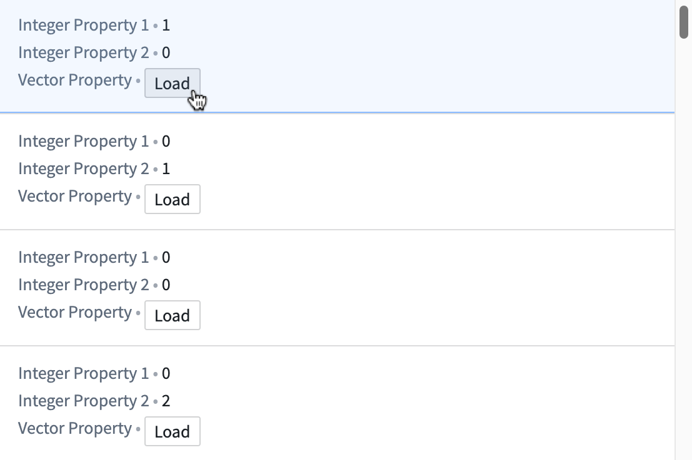
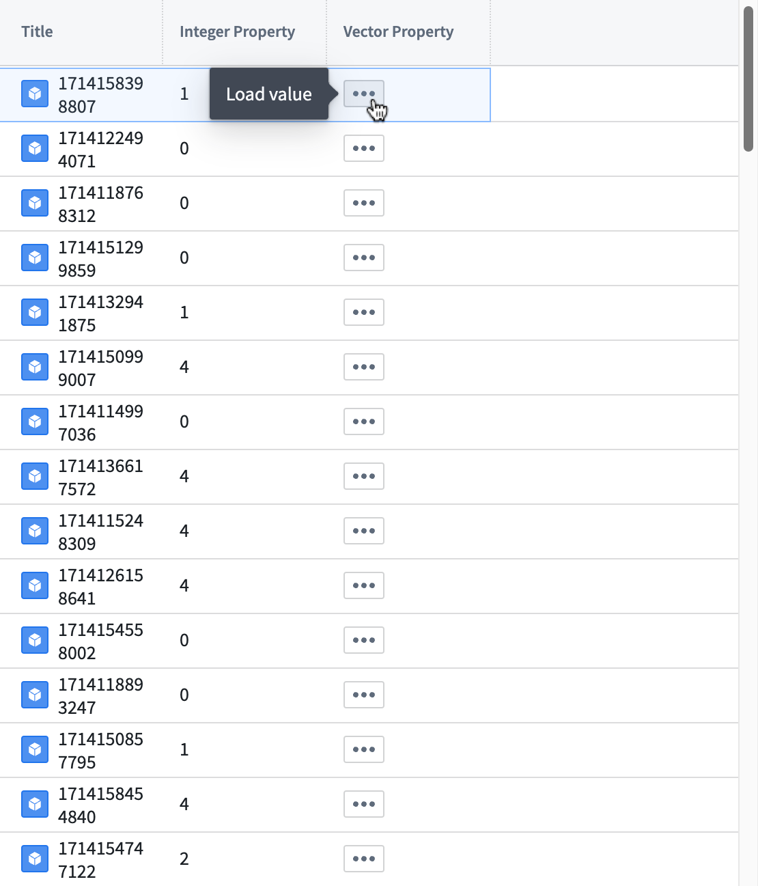
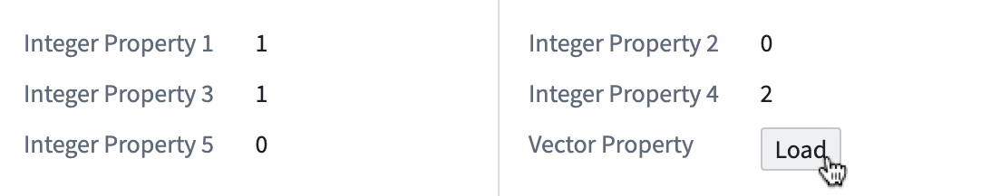

Certain Ontology properties are extremely large and will increase the loading time in a module. These "non-performant" properties are generally unsupported in Workshop. Information on certain Workshop widgets that support displaying unsupported properties can be found on this page.
The following property types are generally unsupported in Workshop:
Certain Workshop widgets can be configured to allow viewing of unsupported property types. For widgets that support viewing a property type on-demand, the unsupported property must be specifically revealed by a user action as described below. A warning icon with tooltip will also be displayed for unsupported properties during widget configuration describing its non-performance due to large size.

The following widgets support viewing specific unsupported properties of an object on-demand:
Object List: To view an unsupported property's value in an object list widget, select Load to reveal its value.

Object Table: To view an unsupported property's value in an object table widget, select ... button to reveal its value.

Property List: To view an unsupported property's value in a property list widget, select Load to reveal its value.

The following widgets support viewing unsupported properties of an object:
Derived properties calculate property values at runtime based on links and aggregations. While derived properties also have performance considerations and limited widget support, they are computed values rather than native property types. See the derived properties documentation for information on their specific limitations.